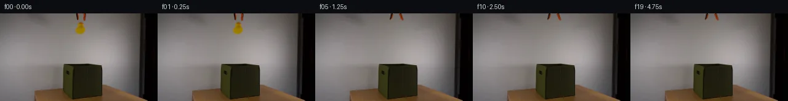
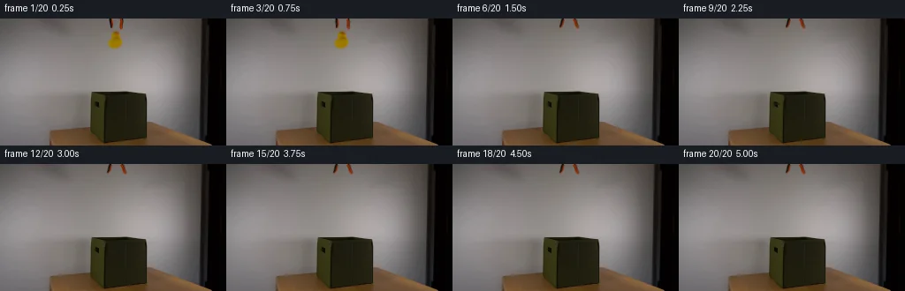
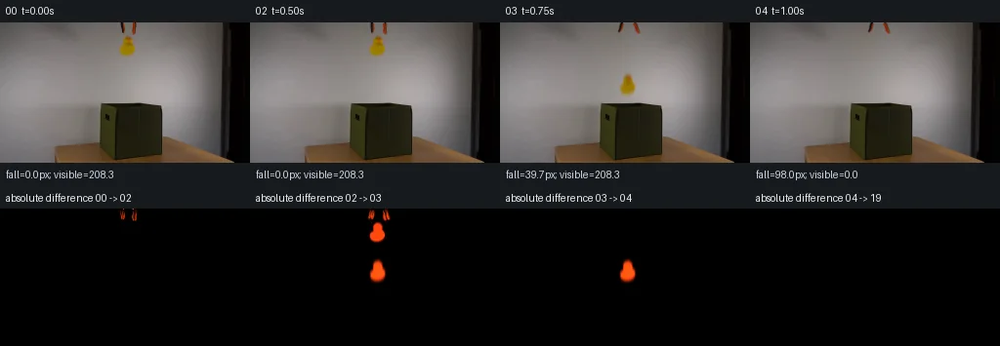

V0 · 初版
2026-11-05T02:03:08.259176+00:00 · RGB b7f0c2c22edf
![]()
Observable Generation Trace
把最终像素视频、Harness 冻结的每轮候选、真实工具事件和 Agent 自述放在同一页。可观测证据与模型自述分开标记，避免把“模型说它检查过”误当成真实工具调用。
![首帧]()
Static locked-off single-shot with fixed frame throughout filmed with constant framerate in real-time. The scene shows a realistic scientific demonstration. The scene only contains the described setup and actions. An orange-black grabber tool is suspended above the open dark green fabric box on a wooden table. The orange-black grabber tool releases the yellow rubber duck above the open dark green fabric box.
首帧显示在左侧播放器初始画面。Track 权限、隔离和 tensor 一致性来自 run manifest，而不是 METHOD.md。
默认勾选初版和最终版；可选其他版本一起同步播放。仅检查图更新的连续重复快照已合并，回退旧视频仍保留为一次修订。
Observable events
来源：events.jsonl + run manifest
此 Track 禁止读取输出图片。逐轮预览由外部 Harness 自动冻结，只用于事后审计，生成 Agent 当时看不到这些页面。
Frozen candidates
每张图来自该 round 的真实 00 / 01 / 05 / 10 / 19 帧

pixels b5bf76c5f3e09ecd · code 418d2a43a9a2f8f5
--- previous/generate.py
+++ current/generate.py
@@ -0,0 +1,280 @@
+"""Deterministic local pixel continuation of the supplied scientific scene.
+
+No external scene inputs, rendering engines, learned models, or image inspection.
+Run: python generate.py
+"""
+from pathlib import Path
+import base64
+import json
+import re
+
+import numpy as np
+from PIL import Image, ImageDraw
+from scipy.ndimage import gaussian_filter, binary_dilation, map_coordinates
+
+from artifact_io import save
+
+ROOT = Path(__file__).resolve().parent
+H, W = 144, 256
+FPS = 4
+G = 2200.0 # image-plane px/s^2; about 224 px/m
+RELEASE = 0.56
+SHUTTER = 1.0 / 80.0
+Y, X = np.mgrid[:H, :W].astype(np.float64)
+SOURCE = np.asarray(Image.open(ROOT / 'first_frame.png').convert('RGB'))
+assert SOURCE.shape == (H, W, 3)
+SRC = SOURCE.astype(np.float64)
+
+
+def wall_features(x, y):
+ """Cubic polynomial in normalized coordinates, fitted only on visible wall."""
+ xx = (x - 131.0) / 25.0
+ yy = (y - 22.0) / 25.0
+ return np.stack([np.ones_like(xx), xx, yy, xx * xx, xx * yy, yy * yy,
+ xx ** 3, xx * xx * yy, xx * yy * yy, yy ** 3], axis=-1)
+
+
+# Exclude the whole foreground and its defocused edge halo from the wall fit.
+wall_region = (X >= 109) & (X <= 153) & (Y <= 47)
+foreground_exclusion = (X >= 119) & (X <= 143) & (Y <= 38)
+fit_region = wall_region & ~foreground_exclusion
+feat = wall_features(X, Y)
+coeff = np.linalg.lstsq(feat[fit_region], SRC[fit_region], rcond=None)[0]
+# One robust refinement prevents minor compression noise from biasing the fit.
+for _ in range(3):
+ residual = SRC[fit_region] - feat[fit_region] @ coeff
+ weight = np.minimum(1.0, 2.2 / (np.linalg.norm(residual, axis=1) + 1e-6))
+ coeff = np.linalg.lstsq(feat[fit_region] * weight[:, None],
+ SRC[fit_region] * weight[:, None], rcond=None)[0]
+WALL = np.clip(feat @ coeff, 0, 255)
+
+
+def matte(rect, mode):
+ """Infer source alpha from the blue deficit relative to the fitted gray wall.
+
+ Black/orange/yellow foregrounds have blue near zero. Unpremultiplication
+ removes the gray fringe, preserving the observed color and shading.
+ """
+ x0, y0, x1, y1 = rect
+ a = np.zeros((H, W), dtype=np.float64)
+ box = np.zeros((H, W), dtype=bool)
+ box[y0:y1, x0:x1] = True
+ deficit = (WALL[..., 2] - SRC[..., 2]) / np.maximum(WALL[..., 2] - 1.0, 1.0)
+ chroma = ((SRC[..., 0] - SRC[..., 2]) -
+ (WALL[..., 0] - WALL[..., 2]))
+ if mode == 'duck':
+ support = box & (chroma > 2.5) & (deficit > 0.018)
+ else:
+ dark = WALL.mean(axis=-1) - SRC.mean(axis=-1)
+ support = box & (deficit > 0.018) & ((chroma > 2.0) | (dark > 4.0))
+ a[support] = np.clip(deficit[support], 0, 1)
+ # Recover premultiplied foreground; this avoids color leakage at the edge.
+ premult = np.clip(SRC - WALL * (1.0 - a[..., None]), 0, 255 * a[..., None])
+ premult[~support] = 0
+ return {'alpha': a, 'premult': premult, 'support': support}
+
+
+DUCK = matte((119, 13, 142, 38), 'duck')
+LEFT = matte((120, 0, 131, 14), 'tool')
+RIGHT = matte((132, 0, 143, 14), 'tool')
+
+
+def erase(objects):
+ support = np.logical_or.reduce([o['support'] for o in objects])
+ # Reconstruct only the newly uncovered local wall, with a soft boundary.
+ core = binary_dilation(support, iterations=1)
+ weights = gaussian_filter(core.astype(float), sigma=0.55)
+ weights[core] = 1.0
… diff truncated; 193 more lines …
pixels bec6dc0c8fea0c98 · code 4270d7118f7f1461
--- previous/generate.py
+++ current/generate.py
@@ -20,6 +20,12 @@
G = 2200.0 # image-plane px/s^2; about 224 px/m
RELEASE = 0.56
SHUTTER = 1.0 / 80.0
+FLOOR_DROP = 98.0 # duck body reaches the box floor at approximately y=132
+RESTITUTION = 0.12 # soft rubber/fabric impact; rebound remains inside the box
+FALL_TIME = np.sqrt(2.0 * FLOOR_DROP / G)
+IMPACT_TIME = RELEASE + FALL_TIME
+REBOUND_V = RESTITUTION * G * FALL_TIME
+SETTLE_TIME = IMPACT_TIME + 2.0 * REBOUND_V / G
Y, X = np.mgrid[:H, :W].astype(np.float64)
SOURCE = np.asarray(Image.open(ROOT / 'first_frame.png').convert('RGB'))
assert SOURCE.shape == (H, W, 3)
@@ -127,9 +133,15 @@
def duck_motion(t):
dt = max(0.0, t - RELEASE)
- dy = 0.5 * G * dt * dt
- dx = 1.6 * dt
- angle = -18.0 * dt
+ if t <= IMPACT_TIME:
+ dy = 0.5 * G * dt * dt
+ elif t < SETTLE_TIME:
+ rebound_t = t - IMPACT_TIME
+ dy = FLOOR_DROP - REBOUND_V * rebound_t + 0.5 * G * rebound_t ** 2
+ else:
+ dy = FLOOR_DROP
+ dx = 1.6 * min(dt, FALL_TIME)
+ angle = -18.0 * min(dt, FALL_TIME)
return dx, dy, angle
@@ -144,6 +156,9 @@
(RIGHT, (137.0, 0.0), -27.0 * u)]:
alpha, color = transformed(obj, pivot, angle=angle)
frame = over(frame, alpha, color)
+ if t < RELEASE:
+ # Protect the held toy from the adjacent finger's reconstruction halo.
+ frame[DUCK['support']] = SRC[DUCK['support']]
visible = float(DUCK['alpha'].sum()) if t < RELEASE else 0.0
if t >= RELEASE:
# Exposure integration in premultiplied color gives a photographic
@@ -226,8 +241,20 @@
# Box, table, wall away from the former objects, and camera stay exact.
assert np.all(frames[:, 82:] == SOURCE[82:])
assert np.all(frames[4:] == frames[4])
+ assert np.array_equal(frames[2][DUCK['support']], SOURCE[DUCK['support']])
assert diagnostics[3]['duck_visible_alpha'] > 150
assert all(d['duck_visible_alpha'] == 0 for d in diagnostics[4:])
+ # Intermediate-time numeric probes validate entering the narrow opening,
+ # complete near-wall occlusion, and a bounded floor impact / small rebound.
+ occlusion_probes = {}
+ for t in [0.775, 0.795, 0.825, float(IMPACT_TIME), float(SETTLE_TIME), 4.75]:
+ _, diagnostic = render(t)
+ occlusion_probes[f'{t:.6f}'] = diagnostic
+ assert render(0.795)[1]['duck_visible_alpha'] > 0
+ assert render(0.825)[1]['duck_visible_alpha'] == 0
+ assert duck_motion(float(IMPACT_TIME))[1] == FLOOR_DROP
+ assert duck_motion(float(SETTLE_TIME))[1] == FLOOR_DROP
+ assert max(duck_motion(t)[1] for t in np.linspace(0, 5, 501)) <= FLOOR_DROP
# Check that the old duck location is wall-colored after release.
core = DUCK['alpha'] > 0.8
wall_delta = np.abs(frames[4].astype(float)[core] - WALL[core])
@@ -245,6 +272,7 @@
'html_delta_reconstruction_exact': True,
'static_box_table_and_background_exact': True,
'frames_04_to_19_identical': True,
+ 'held_duck_pixels_exact_frame_02': True,
'duck_alpha_area_initial': float(DUCK['alpha'].sum()),
'initial_duck_alpha_centroid': [float((DUCK['alpha'] * X).sum() / DUCK['alpha'].sum()),
float((DUCK['alpha'] * Y).sum() / DUCK['alpha'].sum())],
@@ -254,6 +282,11 @@
'changed_bounds_vs_initial': bounds,
'release_seconds': RELEASE, 'gravity_pixels_per_second_squared': G,
'shutter_seconds': SHUTTER, 'frame_events': diagnostics,
+ 'floor_drop_pixels': FLOOR_DROP,
+ 'impact_time_seconds': float(IMPACT_TIME),
+ 'settled_time_seconds': float(SETTLE_TIME),
+ 'rebound_height_pixels': float(REBOUND_V ** 2 / (2 * G)),
+ 'occlusion_numeric_probes': occlusion_probes,
'inspection_method': 'Local code and numeric checks only; generated images were saved but never viewed.'
}
(ROOT / 'verification.json').write_text(json.dumps(report, indent=2) + '\n')pixels bec6dc0c8fea0c98 · code 4270d7118f7f1461
No generate.py text change in this frozen round.
pixels bec6dc0c8fea0c98 · code da8aaeb8cf752412
--- previous/generate.py
+++ current/generate.py
@@ -134,7 +134,7 @@
def duck_motion(t):
dt = max(0.0, t - RELEASE)
if t <= IMPACT_TIME:
- dy = 0.5 * G * dt * dt
+ dy = min(FLOOR_DROP, 0.5 * G * dt * dt)
elif t < SETTLE_TIME:
rebound_t = t - IMPACT_TIME
dy = FLOOR_DROP - REBOUND_V * rebound_t + 0.5 * G * rebound_t ** 2
@@ -148,7 +148,8 @@
def render(t):
if t < 0.40:
return SOURCE.copy(), {'duck_visible_alpha': float(DUCK['alpha'].sum()),
- 'duck_dy': 0.0, 'jaw_open': 0.0}
+ 'duck_dy': 0.0, 'jaw_open': 0.0,
+ 'physics_phase': 'held'}
frame = (TOOL_BG if t < RELEASE else EMPTY_BG).copy()
u = jaw_openness(t)
# Rotate the cropped physical fingers around their fixed offscreen roots.
@@ -180,6 +181,9 @@
'duck_visible_alpha': visible,
'duck_dy': duck_motion(t)[1],
'jaw_open': float(u),
+ 'physics_phase': ('held' if t < RELEASE else
+ 'free_fall' if t < IMPACT_TIME else
+ 'hidden_rebound' if t < SETTLE_TIME else 'settled'),
}
@@ -211,11 +215,13 @@
packed = archive['pixels']
assert packed.dtype == np.uint32
assert packed.shape == (H, W, 20)
+ assert packed.max() <= 0xFFFFFF
expected = ((frames[..., 0].astype(np.uint32) << 16) |
(frames[..., 1].astype(np.uint32) << 8) |
frames[..., 2].astype(np.uint32)).transpose(1, 2, 0)
assert np.array_equal(packed, expected)
assert np.array_equal(frames[0], SOURCE)
+ assert (ROOT / 'frames' / '00.png').read_bytes() == (ROOT / 'first_frame.png').read_bytes()
for n in range(20):
png = np.asarray(Image.open(ROOT / 'frames' / f'{n:02d}.png'))
assert np.array_equal(png, frames[n])
@@ -247,11 +253,11 @@
# Intermediate-time numeric probes validate entering the narrow opening,
# complete near-wall occlusion, and a bounded floor impact / small rebound.
occlusion_probes = {}
- for t in [0.775, 0.795, 0.825, float(IMPACT_TIME), float(SETTLE_TIME), 4.75]:
+ for t in [0.775, 0.795, 0.835, float(IMPACT_TIME), float(SETTLE_TIME), 4.75]:
_, diagnostic = render(t)
occlusion_probes[f'{t:.6f}'] = diagnostic
assert render(0.795)[1]['duck_visible_alpha'] > 0
- assert render(0.825)[1]['duck_visible_alpha'] == 0
+ assert render(0.835)[1]['duck_visible_alpha'] == 0
assert duck_motion(float(IMPACT_TIME))[1] == FLOOR_DROP
assert duck_motion(float(SETTLE_TIME))[1] == FLOOR_DROP
assert max(duck_motion(t)[1] for t in np.linspace(0, 5, 501)) <= FLOOR_DROP
@@ -268,6 +274,7 @@
'method': 'local source-pixel matting, cubic wall reconstruction, rigid finger transforms, analytic gravity, exposure integration, lip occlusion',
'frames': 20, 'width': W, 'height': H, 'fps': FPS, 'duration_seconds': 5,
'frame_00_exact': True, 'all_pngs_match_uint32_tensor': True,
+ 'frame_00_png_file_identical_to_source': True,
'packed_tensor_shape': list(packed.shape), 'packed_tensor_dtype': str(packed.dtype),
'html_delta_reconstruction_exact': True,
'static_box_table_and_background_exact': True,
@@ -305,6 +312,8 @@
diagnostics.append({'frame': n, 'time': t, **d})
frames = np.asarray(frames, dtype=np.uint8)
save(frames, ROOT)
+ # Also preserve the input PNG byte-for-byte, in addition to pixel equality.
+ (ROOT / 'frames' / '00.png').write_bytes((ROOT / 'first_frame.png').read_bytes())
transition_sheet(frames, diagnostics)
verify(frames, diagnostics)
Final visual checks
Harness 保存的最终产物


Agent claims
以下文字由生成 Agent 撰写，不等同于工具证据
Only the supplied first_frame.png and prompt.txt are scene inputs. The attached initial image was observed directly; later generated images will be assessed only by local code and numeric checks.
The source is 256 × 144 RGB. The camera looks slightly down at a wooden tabletop with a gray wall and a dark vertical structure at the right. The table begins near (57,128) and extends to the lower right. The dark olive green fabric box spans approximately x=103–166 and y=82–141. Its lighter left face extends from x=104 to x=118, with a small dark handle near (110,97). Its large darker face spans x=118–164. The open top is strongly foreshortened: the back edge is near y=83 and the near lip runs approximately (118,86) to (164,86). The walls occlude any object below this lip.
The yellow duck occupies approximately x=122–138, y=14–35, with its center near (130,25). Its head is above its rounded body, and it has warm orange shading on the upper right. It is lit softly and is much darker than a fully saturated drawing would be. The grabber consists of black/orange fingers cropped by the top of the frame: the left is near x=124–128, y=0–12; the right near x=135–139, y=0–13. Their top pivots remain fixed while the tips open outward. The duck is vertically aligned with the opening of the box. Scene geometry, texture, illumination, and camera must remain fixed.
Use the original duck pixels as a matted sprite, locally reconstruct the newly exposed wall, and pivot the original grabber finger pixels outward. Use image-plane constant-gravity free fall with zero initial velocity and a negligible lateral impulse. A scale of approximately 224 pixels/metre implies g=2200 pixels/second²; the 20-pixel duck is about 9 cm tall and the 55-pixel box about 25 cm tall. Release at t=0.56 s. At t=0.75 s the duck has fallen about 40 pixels and remains above the lip. It enters the box around t=0.78–0.81 s and becomes completely occluded before the t=1.00 s sample. A short exposure will add subtle vertical motion blur during the fall. The duck reaches a modeled interior floor at a 98-pixel drop (approximately 0.8585 s); a small hidden rebound settles by approximately 0.9301 s. No bounce rises above the tall fabric walls. After release, the opened grabber stays suspended and the duck remains inside the box.
At 4 fps there is at most one fully visible midair sample for this gap and physical scale. The action must stay in real time instead of extending the fall to fill five seconds. The 20 samples are spaced by 0.25 s; playback holds the final sample to complete five seconds.
| Frame | Time (s) | Planned event |
|---|---|---|
| 00 | 0.00 | Exact source pixels; duck suspended above the box. |
| 01 | 0.25 | Hold source composition. |
| 02 | 0.50 | Tips begin opening; duck remains at its initial position. |
| 03 | 0.75 | Jaws open; duck has fallen about 40 px, with modest exposure blur. |
| 04 | 1.00 | Duck completely inside/behind the box walls; gripper open. |
| 05 | 1.25 | Duck settles invisibly inside; locked camera. |
| 06 | 1.50 | Hold opened gripper and box. |
| 07 | 1.75 | Hold. |
| 08 | 2.00 | Hold. |
| 09 | 2.25 | Hold. |
| 10 | 2.50 | Hold. |
| 11 | 2.75 | Hold. |
| 12 | 3.00 | Hold. |
| 13 | 3.25 | Hold. |
| 14 | 3.50 | Hold. |
| 15 | 3.75 | Hold. |
| 16 | 4.00 | Hold. |
| 17 | 4.25 | Hold. |
| 18 | 4.50 | Hold. |
| 19 | 4.75 | Final settled frame, held through the end of the 5 s playback. |
Check frame shape/count/dtype, exact frame 00 equality, tensor uint32 packing and every saved PNG, player reconstruction, fixed scene pixels outside the local action region, source duck removal, duck drop displacement, gripper pivot locations, disappearance behind the box lip, and identical settled frames. Save the required contact sheet and an annotated transition diagnostic without using an image Read/View tool to inspect them.
This is a deterministic, local 2D pixel continuation of the supplied first frame. The scene inputs are exclusively first_frame.png and prompt.txt. It uses NumPy, Pillow and SciPy for pixel math and file output. No network, external images, external masks, AI models, rendering engines, or subagents were used.
The attached initial frame was observed directly. Generated frames and diagnostic images were assessed only through local code and numeric checks; they were never opened with an image Read/View tool. The saved inspection sheets are available for subsequent human review.
The wall, wooden table, fabric box and right-side structure retain their original pixels. A cubic polynomial fit reconstructs the small wall areas previously covered by the duck and gripper fingers. The fit uses visible neighboring wall pixels while excluding the objects and their soft edges; its mean absolute fitting error is about 0.64 RGB levels. Reconstruction masks are inferred in code from the source pixels and feathered locally.
The duck and two fingers are extracted from the source using alpha estimates based on their blue-channel deficit relative to the gray wall. Their premultiplied foreground colors preserve the photographed texture, warm shading, and soft silhouette. Inverse coordinate mapping moves these source pixels; there is no newly drawn replacement duck or box. The duck's initial alpha centroid is approximately (130.04, 24.63), with an alpha area of 208.33 pixels. Before release, its source pixels are protected from the adjacent finger's background reconstruction.
The fingers pivot around fixed roots at approximately (125,0) and (137,0). Smooth opening runs from 0.40 to 0.68 seconds, ending at outward rotations of 25 and 27 degrees. The duck releases at 0.56 seconds with zero vertical speed. Gravity is 2200 pixels/second². This corresponds to an assumed image scale of about 224 pixels/metre, giving a roughly 9 cm duck and a roughly 25 cm box. These dimensions are plausible working assumptions inferred from the image, not measured physical calibration.
At the 0.75-second sample, the duck has dropped 39.71 pixels. It also receives a small 1.6 pixel/second horizontal impulse and an 18 degree/second angular velocity. Thirteen exposure samples over 1/80 second produce approximately five pixels of vertical motion blur at that instant. The size and photographed appearance of the toy remain fixed.
The narrow box opening has a near lip around y=86. A depth mask clips duck pixels behind that lip and the opaque fabric front wall. Intermediate-time numeric probes confirm partial visibility at 0.795 seconds and complete occlusion by 0.835 seconds, including the exposure interval. The duck reaches the modeled interior floor after a 98-pixel drop at approximately 0.8585 seconds. A restitution coefficient of 0.12 gives a 1.41-pixel rebound wholly hidden inside the box; it settles by approximately 0.9301 seconds. Frame 04 and all following frames therefore show the empty opened gripper and unchanged box. The hidden collision is an analytic animation assumption; no 3D rigid-body or fabric simulation is claimed.
Twenty RGB frames at 256 × 144 are sampled at t = 0.00, 0.25, …, 4.75 seconds. The standalone player displays them for 0.25 seconds each, giving five seconds at 4 fps. The input PNG is copied byte-for-byte to frames/00.png, and the tensor contains exactly the same RGB pixels.
generate.py: complete, deterministic generation and verification code. Run python generate.py from this workspace.pixels.npz: key pixels, shape (144, 256, 20), dtype uint32, encoded as 0xRRGGBB.frames/00.png–frames/19.png: all twenty RGB images.inspection.png: eight-frame contact sheet, saved without visual inspection.transition_check.png: frames 00, 02, 03 and 04 with numeric labels and corresponding absolute-difference heatmaps, saved without visual inspection.index.html: standalone 4 fps player with embedded lossless pixel data.OBSERVATION.md: initial measurements and the pre-coding twenty-frame event plan.verification.json: machine-readable results and intermediate-time physics/occlusion probes.All checks pass after correcting the held-duck reconstruction overlap and bounding its trajectory with the interior floor collision:
first_frame.png.0xRRGGBB tensor slice.Verification establishes file integrity, local motion geometry, scene stability, and the stated analytic timing. It is not a claim that generated images were visually reviewed.